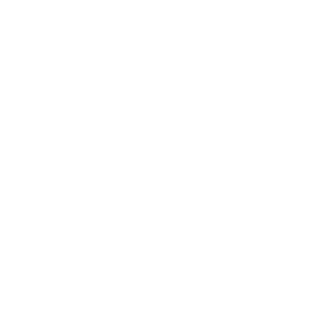
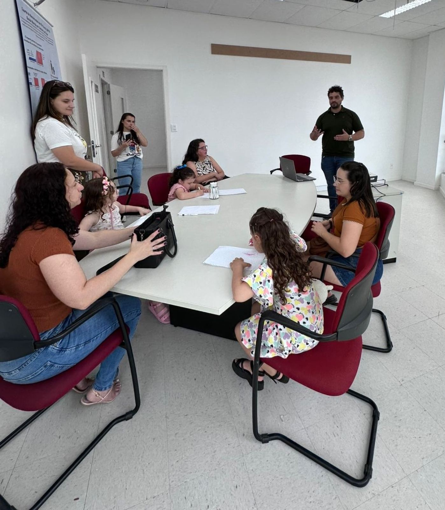

Christian Loret de Mola Zanatti
Coordenador / Investigador Principal

Investigamos como experiências sociais, familiares e ambientais moldam a saúde ao longo da vida.
Perguntas diferentes, uma mesma ideia: acompanhar vidas reais e produzir conhecimento que faça diferença para elas.
4 linhas de pesquisa 5 projetos 1 coorte desde 2019
Pesquisa em andamento, construída sobre uma coorte que acompanha famílias desde o nascimento.
Acompanhamos mães, crianças e famílias desde o nascimento.
Conheça a CoorteA pesquisa cresce quando diferentes perspectivas se encontram. Construímos projetos com parceiros no Brasil e em outros países.

Queremos fazer cada vez mais pesquisa com as pessoas, e não apenas sobre elas.
Queremos que o conhecimento circule — e volte a quem torna a pesquisa possível.
Formação de estudantes dentro de projetos reais.
Perguntas e métodos construídos com parceiros de quatro países.
Compromisso com resultados que circulem além da publicação científica.
Coordenador / Investigador Principal
Pesquisadora / Gestão de dados
Pesquisador / Cientista de dados
Pesquisadora / Curadoria de dados
Pós-doutoranda / Interações e desenvolvimento infantil
Pesquisadora / Professora colaboradora
Mestrando
Mestranda
Iniciação científica
Iniciação científica
Iniciação científica
Universidade Federal do Rio Grande — FURG
Rio Grande, RS, Brasil
Coordenação chlmz@furg.br
Coorte Rio Grande 2019 coorteriogrande2019@gmail.com
O GPIS é um grupo de pesquisa da Universidade Federal do Rio Grande (FURG), vinculado ao Programa de Pós-Graduação em Saúde Pública (PPGSP).